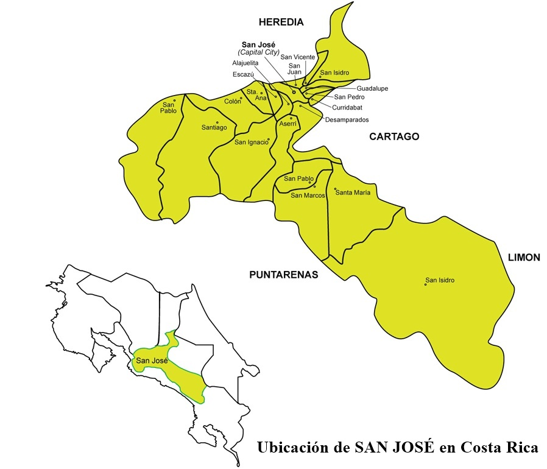

Provincia de San José
La provincia de San José está rodeada por las provincias de Alajuela, Cartago, Puntarenas, Limón y Heredia.
Para facilitar la organización, las provincias en Costa Rica se dividen en cantones. Esta estructura se conoce como división política y consiste en la subdivisión del territorio nacional en provincias, cantones, distritos y caseríos.
San José es la provincia con mayor número de cantones (20 en total), todos ubicados en zonas con un clima fresco, lo que contribuye a la calidad de vida de sus habitantes.
Además, San José es la provincia más densamente poblada de Costa Rica y alberga las principales oficinas gubernamentales del país, como los tres poderes del Estado: el Poder Legislativo, el Poder Ejecutivo y el Poder Judicial. También cuenta con instituciones tanto públicas como privadas de gran relevancia, destacando edificios importantes por su altura o por el valor de las instituciones que alojan, tales como la Corte Suprema de Justicia, el Tribunal Supremo de Elecciones, la Caja Costarricense de Seguro Social, el Banco Nacional de Costa Rica, el Instituto Nacional de Seguros, la Asamblea Legislativa, la Casa Presidencial y diversos hospitales.
La ciudad de San José, aunque ubicada en un país de tamaño reducido, es una ciudad de gran actividad, con constantes desplazamientos de personas que se dirigen a sus trabajos, realizan compras o llevan a cabo trámites personales en diferentes puntos de la ciudad.
Debido a la densidad de población, tráfico de vehículos, fábricas y otras actividades, San José enfrenta problemas de contaminación, ruido, suciedad en las calles, y una percepción de pobreza reflejada en la indigencia y la proliferación de tugurios.
Muchos residentes de áreas rurales llegan a San José buscando oportunidades de trabajo y superación. Sin embargo, la realidad es que muchos enfrentan dificultades para encontrar empleo, lo cual desencadena problemas sociales como el abandono de menores en las calles, aumento en la indigencia, prostitución, robos y consumo de drogas. Esta migración también ha generado escasez de mano de obra en las áreas rurales.
Por otro lado, San José ofrece múltiples atracciones y lugares de entretenimiento para nacionales y extranjeros, como el Museo Nacional, el Teatro Nacional, los parques de La Sabana, el Parque Bolívar, el Museo de Jade del Instituto Nacional de Seguros, el Museo de Oro en la Plaza de la Cultura, cines, teatros y otros.
Cada día, los habitantes de la capital deben esforzarse para hacer de San José una ciudad más bella y acogedora.